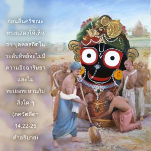
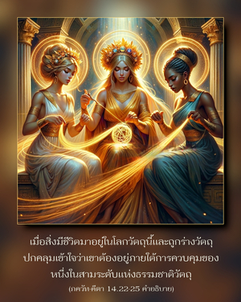
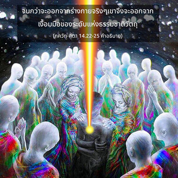

บุคลิกภาพสูงสุดแห่งพระเจ้าตรัสว่า โอ้ โอรสแห่ง ปาณฺฑุ ผู้ที่ไม่เกลียดแสงสว่าง ความยึดติด และความหลง เมื่อสิ่งเหล่านี้ปรากฏ หรือไม่ปรารถนาเมื่อสิ่งเหล่านี้ไม่ปรากฏ ผู้ที่ไม่เอนเอียง และไม่หวั่นไหวกับผลกระทบซึ่งกันและกันของคุณลักษณะต่างๆทางวัตถุทั้งหลาย คงความเป็นกลางและเป็นทิพย์ รู้ว่าระดับต่างๆเท่านั้นที่ทำงาน ผู้ที่สถิตในตนเอง และปฏิบัติต่อความสุขและความทุกข์เหมือนกัน ผู้ที่มองเห็นก้อนดิน ก้อนหิน และทองคำด้วยสายตาที่เท่าเทียมกัน ผู้ที่เสมอภาคต่อสิ่งที่ปรารถนาและสิ่งที่ไม่ปรารถนา ผู้ที่มีความมั่นคง สถิตเสมอภาคเป็นอย่างดีทั้งในคำสรรเสริญและคำเหยียดหยาม การได้เกียรติและการเสียเกียรติ ผู้ที่ปฏิบัติต่อเพื่อนและศัตรูเหมือนกัน และเป็นผู้ที่สละกิจกรรมทางวัตถุทั้งหมด บุคคลเช่นนี้กล่าวว่าได้ข้ามพ้นเหนือระดับต่างๆแห่งธรรมชาติแล้ว



อรฺชุน ทรงถามสามคำถาม องค์ภควานฺทรงตอบทีละข้อ ในโศลกเหล่านี้ก่อนอื่นองค์กฺฤษฺณทรงแสดงให้เห็นว่าบุคคลสถิตในระดับทิพย์จะไม่มีความอิจฉาริษยา และไม่ทะเยอทะยานกับสิ่งใดๆ เมื่อสิ่งมีชีวิตมาอยู่ในโลกวัตถุนี้ และถูกร่างวัตถุปกคลุมเข้าใจว่าเขาต้องอยู่ภายใต้การควบคุมของหนึ่งในสามระดับแห่งธรรมชาติวัตถุ จนกว่าจะออกจากร่างกายจริงๆ เขาจึงจะออกจากเงื้อมมือของระดับแห่งธรรมชาติวัตถุ ตราบใดที่ยังไม่ออกไปจากร่างวัตถุเขาควรทำตัวเป็นกลาง และควรปฏิบัติในการอุทิศตนเสียสละรับใช้องค์ภควานฺเพื่อจะได้ลืมการสำคัญตนเองกับร่างกายวัตถุไปโดยปริยาย เมื่อมีจิตสำนึกอยู่กับร่างกายวัตถุ เขาจะทำสิ่งต่างๆ เพื่อสนองประสาทสัมผัสเท่านั้น แต่เมื่อย้ายจิตสำนึกไปที่องค์กฺฤษฺณการสนองประสาทสัมผัสจะหยุดลงโดยปริยาย ร่างกายวัตถุนี้ไม่มีความจำเป็น และตัวเขาก็ไม่จำเป็นต้องยอมรับคำบงการจากร่างวัตถุ คุณสมบัติต่างๆ ของระดับวัตถุในร่างกายจะทำงาน แต่ดวงวิญญาณหรือตัวเขาเองอยู่ออกห่างเหนือไปจากกิจกรรมต่างๆเหล่านี้ เขาอยู่เหนือและห่างออกไปได้อย่างไร เขาไม่ปรารถนาหาความสุขกับร่างกาย และไม่ปรารถนาที่จะออกไปจากร่างกาย ดังนั้น จึงสถิตในวิถีทิพย์สาวกเป็นอิสระโดยปริยาย จึงไม่จำเป็นต้องพยายามมาเป็นอิสระจากอิทธิพลของระดับต่างๆ แห่งธรรมชาติวัตถุ
คำถามต่อไปเกี่ยวกับบุคคลผู้สถิตในวิถีทิพย์ บุคคลสถิตทางวัตถุได้รับผลกระทบจากสิ่งที่สมมติว่าเป็นการได้รับเกียรติ และเสียเกียรติที่เสนอให้กับร่างกาย แต่บุคคลผู้สถิตในวิถีทิพย์ไม่ได้รับผลกระทบจากการได้เกียรติ และการเสียเกียรติอย่างผิดๆ เขาปฏิบัติหน้าที่ในกฺฤษฺณจิตสำนึก และไม่สนใจว่าใครจะให้เกียรติ หรือจะทำให้เขาเสียเกียรติ เขายอมรับสิ่งต่างๆ ที่เอื้ออำนวยต่อหน้าที่การงานของตนในกฺฤษฺณจิตสำนึก ไม่เช่นนั้นจะไม่มีความจำเป็นกับสิ่งใดๆ ที่เป็นวัตถุ ไม่ว่าจะเป็นก้อนหินหรือทองคำ ถือเสียว่าทุกๆ คนที่ช่วยเขาในการปฏิบัติกฺฤษฺณจิตสำนึกเป็นเพื่อนรัก และไม่เกลียดคนที่สมมติว่าเป็นศัตรู เขาปฏิบัติเสมอภาคกับทุกคน และมองดูทุกสิ่งทุกอย่างในระดับเดียวกัน เพราะทราบดีว่าตัวเขาไม่มีอะไรยุ่งเกี่ยวกับความเป็นอยู่ทางวัตถุ ประเด็นทางสังคม และทางการเมืองจะไม่มีผลกระทบต่อเขา เพราะเขารู้ถึงสถานการณ์การเปลี่ยนแปลง และความยุ่งยากต่างๆ ที่ไม่ถาวร และไม่พยายามทำสิ่งใดๆ เพื่อประโยชน์ส่วนตัว แต่จะพยายามทำทุกสิ่งทุกอย่างเพื่อองค์กฺฤษฺณ สำหรับส่วนตัวจะไม่พยายามเพื่อสิ่งใด จากพฤติกรรมเช่นนี้เขาสถิตในวิถีทิพย์โดยแท้จริง